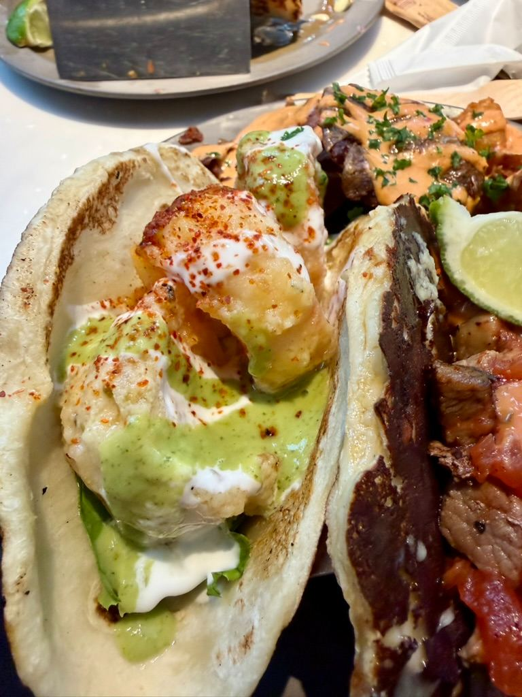
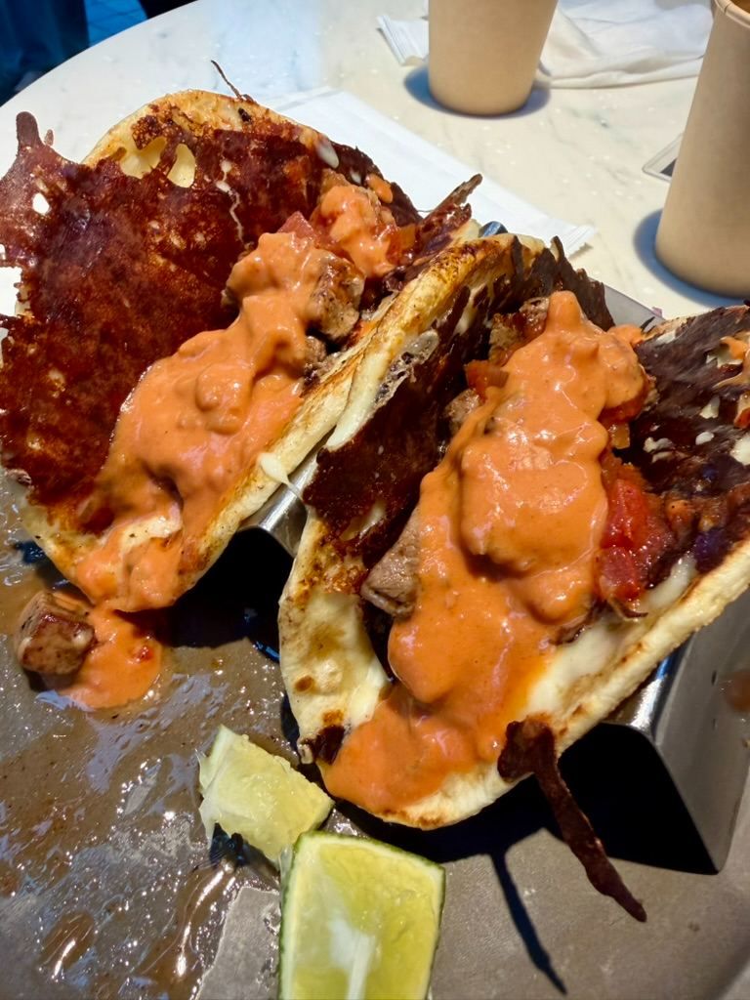
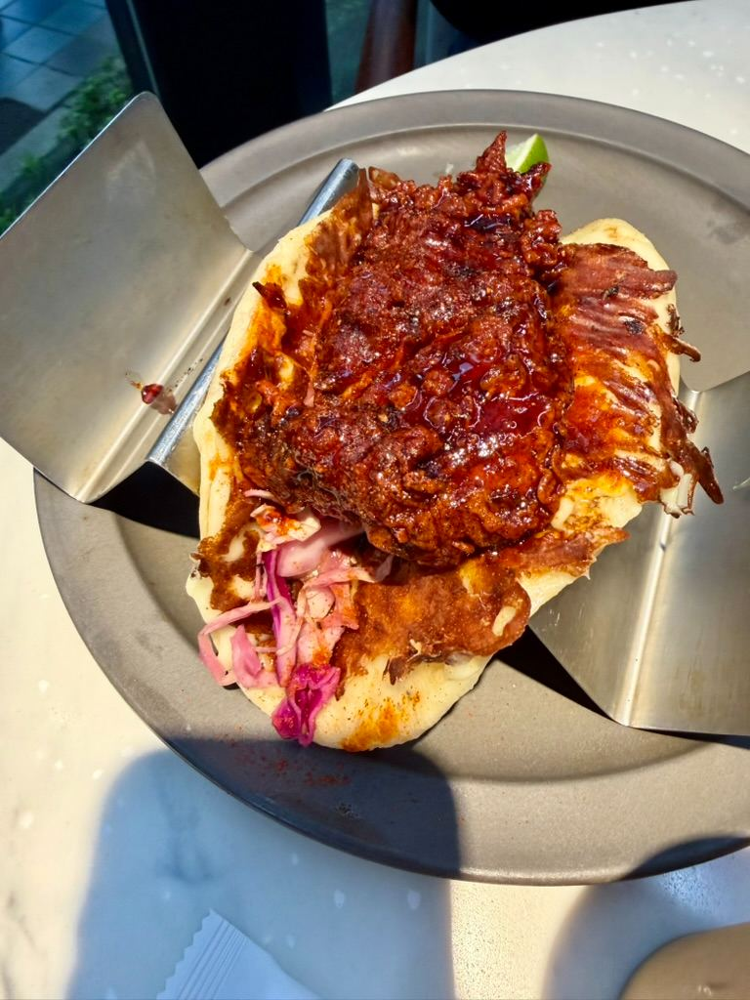
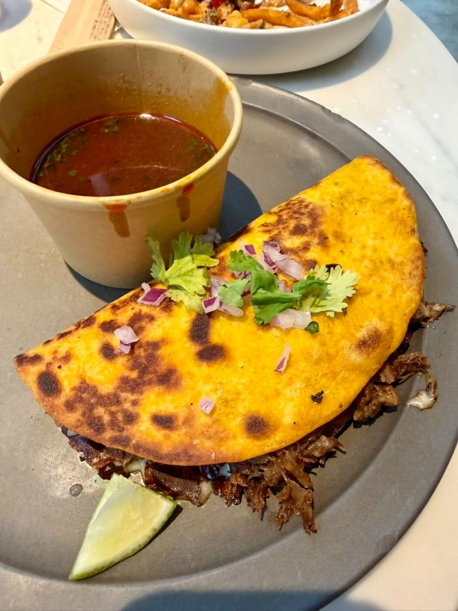
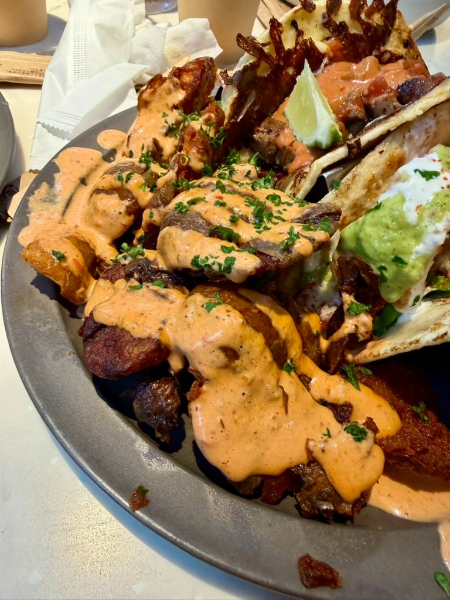
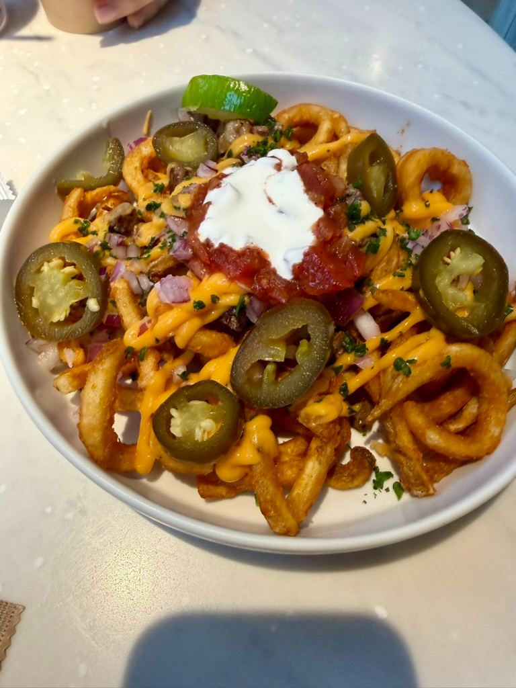
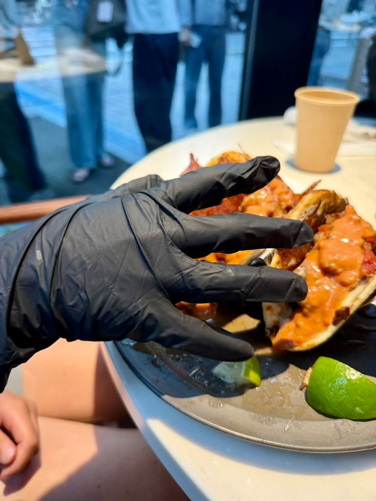

🌮 Squeezing Into Flavor: The Ultimate Loaded Tacos & Fries Feast at Blue Entrance Kitchen! 🍟🔥







Watch on YouTube →
If you are hunting for the ultimate Mexican comfort food experience, you need to clear your schedule and head straight to Blue Entrance Kitchen (BEK). We recently dove headfirst into a mouthwatering street food feast here, and let’s just say our tastebuds are still recovering from the flavor overload!From sauce-smothered gourmet tacos to crispy loaded sides, here is everything we devoured on our latest flavor journey.
🍟 Can't-Miss Sides: Loaded Curly FriesYou cannot leave Blue Entrance Kitchen without ordering a bowl of their loaded curly fries.
Want to see the full feast in action? Check out our latest video adventures and support our upcoming food journeys over at Emmerican Adventure!
🧤 The Pro-Move: The Black Glove TreatmentBefore we even talk about the food, we have to shout out a major game-changer. When your food arrives, they give you black disposable gloves to wear while you eat.At first, you might think it’s just for show, but once you lift your first taco, you’ll realize it is a total lifesaver. These tacos are absolutely bursting with juicy fillings and rich sauces. The gloves keep your hands completely clean, letting you tackle the messy, sauce-smothered goodness with zero holding back.
🌮 The Taco Lineup: Wagyu Birria & BeyondWe didn't hold back on the main event. Here is the breakdown of the incredible gourmet tacos we tried:
- The Wagyu Birria Taco: This was the absolute star of the show. Instead of standard shredded beef, this taco features incredibly tender, premium Wagyu beef. It's tucked into a beautifully crisped shell with melted cheese and served with a deeply flavorful dipping broth (consomé) on the side. Every single bite is incredibly rich and savory.
- The Nashville Hot: A wild and fiery fusion taco! It features a massive piece of crispy, golden fried chicken drenched in a spicy Nashville hot sauce, balanced perfectly with a cool, refreshing purple cabbage slaw.
- The Garlic Shrimp: Perfect for seafood lovers. This taco is loaded with plump, golden-fried shrimp that are beautifully drizzled with a bright green garlic herb sauce and a touch of cream.
- The Golden Beef: A classic flavor profile elevated to perfection. It features juicy, premium grilled beef packed tightly inside a crispy, cheese-crusted tortilla shell.
These aren't just your average seasoned fries; they are piled high with:
- Melted cheddar cheese sauce
- Tangy pickled jalapeños
- Fresh diced red onions and cilantro
- A massive dollop of zesty salsa and cool sour cream
Want to see the full feast in action? Check out our latest video adventures and support our upcoming food journeys over at Emmerican Adventure!